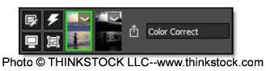
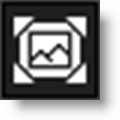
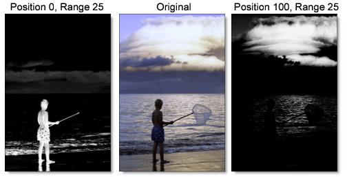
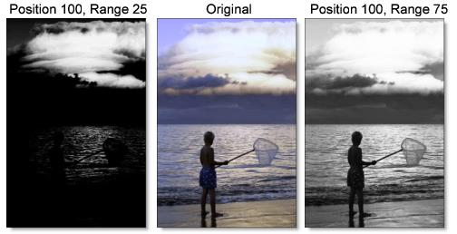
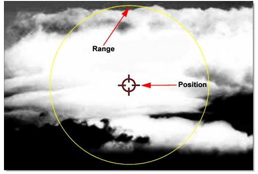
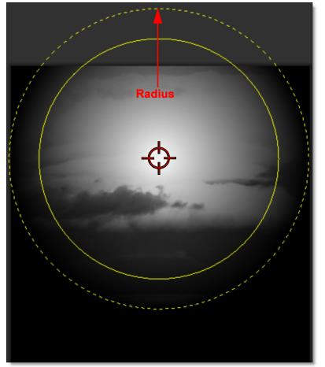

Applying a Selection Mask to a Layer
Selection masks can be used to manipulate, isolate and protect specific parts of an image when making adjustments or applying filters.
Using advanced image slicing algorithms, masks are created using luminance, hue, saturation, average, red, green, blue, cyan, magenta, and yellow values.
1 Select a filter and preset that changes the image in an obvious way.
2 Click the Add Mask icon in the Layers window and choose Selection.
A number of controls appear in the Toolbar above the Viewer. The first control is called Extract On which determines which image values are used to create the mask. The default mask type is luminance, meaning brightness.
3 Press the M key or the Show Mask icon above the Viewer to display the mask.
Position and Range Controls
The Position and Range parameters are key to isolating specific image values.
1 Set the Position parameter by dragging the numeric field to the right of its icon in the Toolbar.
Using the Luminance extraction method, a higher Position value shows more white values from the original image as white values in the mask. A lower Position value shows more black values from the original image as white values in the mask.
Once you’ve selected the Position, you can then add or subtract the Range of values to be included in the mask.
2 Adjust the Range parameter by dragging the numeric field to the right of its icon.
A higher Range value includes more white values in the mask while a lower Range value includes less values in the mask.
In addition to using the slider controls in the Toolbar, the Position, Range and Radius parameters can be set using on-screen controls. Click on the image to place the on-screen control which consists of a center point and a solid circle. The Position value is set by the location of the center point, while the Range is set by sizing the circle. The larger the circle, the larger the range.
3 Change the Radius parameter by dragging the numeric field to the right of its icon.
When the Radius control is increased, a soft, circular mask is created to limit the selection. If the on-screen controls are used, the Radius is represented as a dashed circle.
In this case, the Radius allows me to isolate the clouds from the water.
4 You may want to adjust Black Clip to add more values to the black part of the mask and adjust White Clip to add more values to the white part of the mask.
5 If needed, Shrink/Grow can be used to make the mask smaller or larger and the Blur controls can soften the mask.
6 Press the M key to display the full color image in the Viewer.
See Selection Mask for more information.